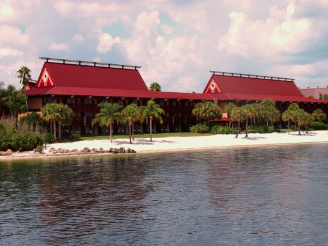

Bar goers have long turned to tiki bars as a means of entertainment and escapism. Hawaiian shirts, fruity drinks, and soft ukele notes create a relaxing, far away experience that patrons across generations continue to enjoy.
Tiki borrows its theme from the polynesian islands in the pacific.
The first tiki bars originated in 1930s California with staples like the Don the Beachcomer and Trader Vics. These locales featured colorful interiors, flaming torches, flower leis, and other exotic decorations and imagery seen in popular movies of the time.

Early tiki bars often served Cantonese, Hawaiian, and Polynesian inspired foods with elaborate drinks.

Tiki mugs, mini umbrellas, flowers, and other garnishes contributed to the light-heartedness. These mugs also became popular souvenirs for bar-goers, a trend started at early tiki bars.
The popularity of tiki expanded after World War II and continued to gain traction through the early 1960s.
You can even find tiki at Disney World at Disney's Polynesian Village Resort. Opened in 1971, this site features classic polynesian architecture and their own tiki bars, showing the reach and appeal of this theme.
Tiki began to decline in popularity throughout the '70s but saw new revival in the '90s'.
Modern tiki fans, like Jeff "Beachbum" Berry helped in the resurgence through the publishing of books, cocktail recipes, and new bars.

It's clear, tiki is here to stay.